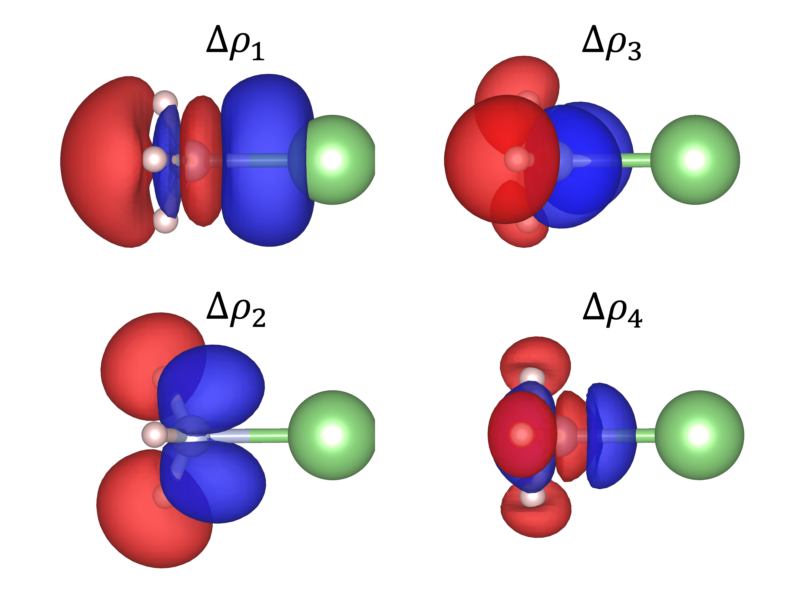
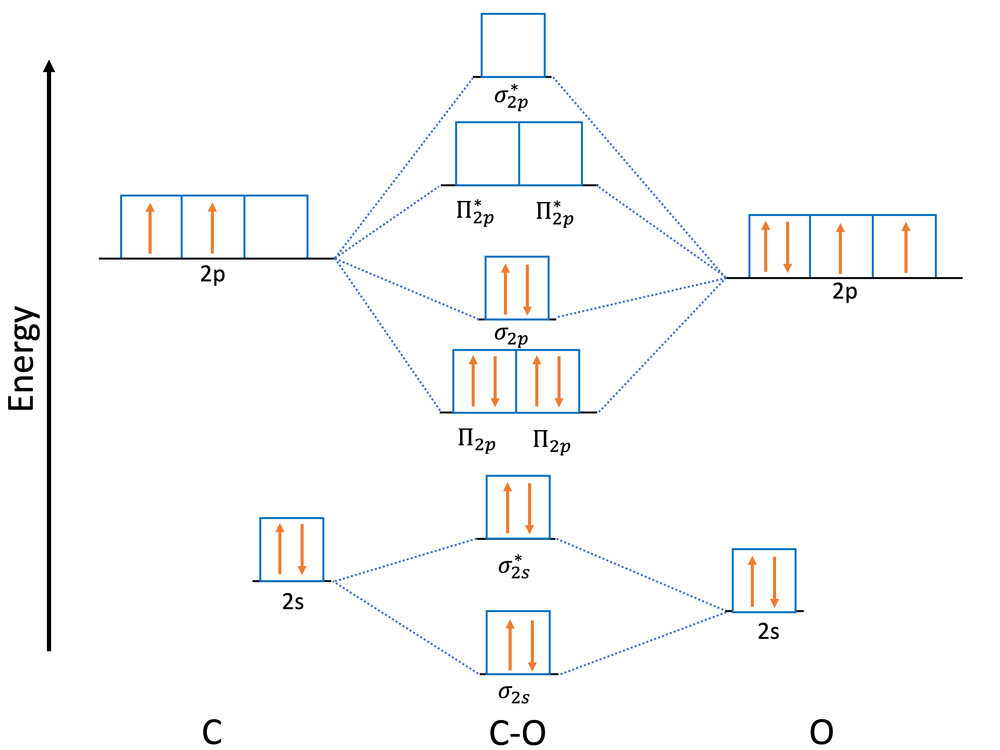

Extended Transition State with Natural Orbitals for Chemical Valence (ETS-NOCV/EDA-NOCV)¶
Note
The NOCV implementation in ORCA 5.0 has been rewritten cardenas2025. Consequently, the generation of NOCVs no longer requires the user to run single-point calculations for the molecular fragments beforehand. This way of producing the NOCVs is deprecated.
In ORCA chemical bonds can be analyzed using the EDA-NOCV framework cardenas2025. This framework combines the Extended Transition State (ETS) energy decomposition method with the Natural Orbitals for Chemical Valence (NOCV) to analyze the electron density rearrangement taking place upon bond formation nocv2009. The ETS method decomposes the energy associated with bond formation into four components:
This represents the “instantaneous” interaction between two non-interacting molecular fragments that leads to the bond formation process. The molecular fragments are established by dividing the molecule into two fragments according to the bond that is being studied. By non-interacting, it is meant that the molecular fragments are considered to be at an infinite distance, and the electron density of each fragment is kept frozen. The first energy term corresponds to the electrostatic interaction that the two non-interacting molecular fragments experience when they are placed in the positions they would occupy in the molecule. The second term contains the total “exchange repulsion” due to the Pauli exclusion principle and the change in the exchange-correlation energy of the fragments when brought together.
It is important to highlight that the value reported in the EDA/ETS decomposition as Pauli Energy corresponds to \(\tilde{E}_{Pauli}\).
The third term of the ETS decomposition corresponds to the energy associated with the interaction between the occupied and unoccupied orbitals of one molecular fragment and the other. Thus, it is associated with the change in electron density during bond formation.
Finally, the last term represents a "dispersion" contribution to the interaction and it is present when semiclassical correction schemes (e.g., Grimme's D4 correction) or when Non-Local (e.g., NL and SCNL) correction are used. These corrections are available for local, hybrid and double-hybrid functionals, for further details refer to Sec. modelchemistries.dispersioncorrections.
A complementary framework to study in more detail the dispersion contribution is the Atomic Decomposition of London Dispersion Energy regni2025ADLD(ADLD). The user can set this dispersion decomposition for DFT-D corrections for both the fragments and the adducts. Then it can examine the atom-resolved changes in the dispersion contribution.
The EDA-NOCV method decomposes this term into contributions associated with pairs of orbitals. These orbitals are obtained by diagonalizing the difference density matrix between the molecule and the "supermolecule" resulting from the non-interacting molecular fragments.
Running an EDA-NOCV analysis in ORCA¶
Note
The current implementation of the EDA-NOCV method in ORCA 6.1 supports mean-field methods for both open-shell and closed-shell calculations.
To perform an EDA-NOCV analysis, three key components must be specified:
- The type of calculation: this defines the overall computational framework and determines whether the analysis will be conducted using restricted or unrestricted mean-field methods.
- The method used for each fragment: this includes the choice of basis sets and exchange-correlation functionals or other theoretical methods applied to each fragment individually. Typically, each fragment should be treated at the same level of theory as the adduct.
- The atoms that correspond to each fragment: this requires defining which atoms belong to each fragment in the molecular system, allowing ORCA to partition the molecule accordingly.
The EDA-NOCV analysis is performed using the EDA keyword in the simple input line. In the following example, we have the input file for an EDA-NOCV analysis of the bond between the two carbon atoms in an ethane molecule. The new implementation allows the study of this system by considering two methyl groups as molecular fragments, with opposite spins for the unpaired electrons.
8 structure (0 1) C 0.019664 -0.034069 0.009101 H 0.039672 -0.069395 1.109620 H 1.063205 -0.065727 -0.341092 H -0.474230 -0.953693 -0.341621 C -0.703210 1.217999 -0.497874 H -0.723753 1.252869 -1.598316 H -1.746567 1.250049 -0.147169 H -0.208833 2.137544 -0.147653
#
# Example of an EDA-NOCV calculation for the CH3-CH3 system with triplet fragments
#
!BP86 TZVP EDA #EDA keyword
%EDA #EDA block
FRAG1 "BP86 TZVP" #Method for fragment 1
FRAG2 "BP86 TZVP" #Method for fragment 2
FRAG1_C 0 #Charge of fragment 1
FRAG1_M 2 #Multiplicity of fragment 1
FRAG1_SF TRUE #Flip spin option for fragment 1
FRAG2_C 0 #Charge of fragment 2
FRAG2_M 2 #Multiplicity of fragment 2
END
*xyz 0 1
C 0.019664 -0.034069 0.009101
H 0.039672 -0.069395 1.109620
H 1.063205 -0.065727 -0.341092
H -0.474230 -0.953693 -0.341621
C -0.703210 1.217999 -0.497874
H -0.723753 1.252869 -1.598316
H -1.746567 1.250049 -0.147169
H -0.208833 2.137544 -0.147653
*
%Frag #Fragment assignment using %frag block
Definition
1 {0:3} end
2 {4:7} end
end
end
All the parameters associated with the EDA-NOCV calculation can be specified within the %EDA block. The method used for each fragment can be specified in two ways: by using keywords or by passing a file. The first method is done by using the FRAG1 and FRAG2 keywords for fragments 1 and 2, respectively. In quotes, you must specify the level of theory and basis set used for each fragment, as well as any other keyword options. It is standard to use the same level of theory for each fragment and for the molecule, but it is also possible to specify different ones.
Note
The basis set used for each molecular fragment and the complete molecule must be consistent. Each molecular fragment may use a different basis set, but this must also be specified for the corresponding atoms/fragments in the molecule calculation using the %basis block. For example:
If additional parameters are required for the calculations of the fragments it is possible to
pass them in a separate file by using the keywords FRAG1_METHODFILE and FRAG2_METHODFILE.
This option should be used especially when a method cannot be specified by using only keywords, but a method block must be used. For example, to specify unsupported solvents in implicit solvation methods, such as C-PCM. In this case, the method file would look like:
Note
The "!" symbol is not required when specifying methods for each fragment. Neither when using the FRAG1 and FRAG2 keywords in the %EDA block nor in the method file when using FRAG1_METHODFILE and FRAG2_METHODFILE.
The current implementation allows for charged and open-shell fragments. To specify the charge of each fragment, the keywords FRAG1_C and FRAG2_C must be used. Similarly, the keywords FRAG1_M and FRAG2_M can be used to specify the multiplicity of each fragment. By default, each fragment is considered to be neutral and closed-shell unless specified otherwise. The total charge of the fragments must add up to the charge of the molecule.
The new implementation also allows for specifying the spin of the unpaired electrons in one of the fragments. For example, in studying the CH\(_3\)-CH\(_3\) system, the previous ORCA implementation only allowed the use of charged closed-shell fragments, CH\(_3^{+1}\) and CH\(_3^{-1}\). Now, it is possible to consider neutral open-shell methyl groups as molecular fragments. By default, the unpaired electrons in an open-shell system are considered spin-up electrons in ORCA, but this can be changed by using the keywords FRAG1_SF and FRAG2_SF. This adjustment allows for a reduction in Pauli repulsion between the two methyl fragments.
The molecular fragments can be specified using the %Frag block or by indicating, next to each atom, to which molecular fragment they belong. This is done by placing the number 1 for the first fragment and the number 2 for the second fragment in parentheses next to each atom.
1 structure (1 1) Li -0.212072 1.951867 0.003088
# # Example of an EDA-NOCV calculation for Li-NH3 bonding # !BP86 TZVP EDA %EDA FRAG1 "BP86 TZVP" FRAG2 "BP86 TZVP" FRAG1_M 1 FRAG1_C 1 END *xyz 1 1 Li(1) -0.212072 1.951867 0.003088 N (2) -0.424027 -0.022414 -0.010889 H (2) -0.914047 -0.381589 -0.841562 H (2) -0.958117 -0.388240 0.789150 H (2) 0.468043 -0.535155 0.011083 *
It is important to note that when using the %Frag block, the indices of the atoms start from 0. For example, in the previous input for Li\(^+\)-NH\(_3\) the fragments can alternatively be specified as:
EDA-NOCV Output File¶
The EDA-NOCV output is divided into two sections. The first section corresponds to the ETS Energy Decomposition Analysis. In this section, each energy term of the ETS decomposition method is printed in Hartree and kcal/mol units. Additionally, if dispersion corrections are used in the calculation, the difference between the dispersion correction for the molecule and that for the molecular fragments is printed. Here is the EDA-NOCV results for the Li\(^+\)-NH\(_3\) input shown in the previous section:
--------------------------------------------------------------------------------
Energy Decomposition Analysis
--------------------------------------------------------------------------------
Energy Term Hartree Kcal/mol
--------------------------------------------------------------------------------
Bond Energy -0.0606951779 -38.09
Orbital Energy -0.0181138301 -11.37
Electrostatic Energy -0.0698943902 -43.86
Pauli Energy 0.0311314946 19.54
Delta E^0(XC) -0.0038170134 -2.40
Delta Dispersion 0.0000000000 0.00
The second part corresponds to the orbital energy decomposition in terms of the NOCVs. In this section, the positive and negative eigenvalues associated with each NOCV pair are printed. The orbital energy contribution for each NOCV pair is given in kcal/mol. Additionally, each contribution is further divided into kinetic and potential energy components. The sum of all orbital contributions must match the total shown in the Energy Decomposition section.
--------------------------------------------------------------------------------
NOCV analysis
--------------------------------------------------------------------------------
negative eigen. positive eigen. DE_k DT_k DV_k
(e) (e) (Kcal/mol) (Kcal/mol) (Kcal/mol)
--------------------------------------------------------------------------------
-0.1972432025 0.1972432025 -7.50 -104.45 96.96
-0.0804518243 0.0804518243 -1.84 37.57 -39.41
-0.0804301830 0.0804301830 -1.84 37.56 -39.40
-0.0193872139 0.0193872139 -0.16 7.73 -7.89
-0.0062264967 0.0062264967 -0.03 -14.21 14.19
-0.0006108673 0.0006108673 -0.00 1.68 -1.68
Sum_k: -11.37 -34.13 22.76
In the case that an open-shell system, or molecular fragment is used, the NOCV section is divided into two parts. One for the spin-up (Alpha) and other for the spin down (Beta) NOCV pairs. The Energy Decomposition section remains the same. Here is the EDA-NOCV results for the CH\(_3\cdot\) and CH\(_3\cdot\) input shown in the previous section:
--------------------------------------------------------------------------------
Energy Decomposition Analysis
--------------------------------------------------------------------------------
Energy Term Hartree Kcal/mol
--------------------------------------------------------------------------------
Bond Energy -0.1776418532 -111.47
Orbital Energy -0.2616245160 -164.17
Electrostatic Energy -0.2105241711 -132.11
Pauli Energy 0.4120105303 258.54
Delta E^0(XC) -0.1174259863 -73.69
Delta Dispersion 0.0000000000 0.00
--------------------------------------------------------------------------------
NOCV analysis Alpha
--------------------------------------------------------------------------------
negative eigen. positive eigen. DE_k DT_k DV_k
(e) (e) (Kcal/mol) (Kcal/mol) (Kcal/mol)
--------------------------------------------------------------------------------
-0.4750327845 0.4750327845 -75.83 -124.63 48.80
-0.0599933854 0.0599933854 -1.69 8.51 -10.19
-0.0599917403 0.0599917403 -1.69 8.51 -10.20
-0.0510118074 0.0510118074 -0.85 -32.69 31.84
-0.0510053349 0.0510053349 -0.85 -32.68 31.83
-0.0412188369 0.0412188369 -0.92 9.08 -10.00
-0.0252608236 0.0252608236 -0.28 -19.31 19.04
-0.0006887548 0.0006887548 -0.00 -6.18 6.18
-0.0003325354 0.0003325354 0.00 4.22 -4.21
Sum_k Alpha: -82.09 -185.17 103.09
--------------------------------------------------------------------------------
NOCV analysis Beta
--------------------------------------------------------------------------------
negative eigen. positive eigen. DE_k DT_k DV_k
(e) (e) (Kcal/mol) (Kcal/mol) (Kcal/mol)
--------------------------------------------------------------------------------
-0.4750299362 0.4750299362 -75.83 -124.66 48.84
-0.0599969082 0.0599969082 -1.69 8.47 -10.16
-0.0599919936 0.0599919936 -1.69 8.50 -10.18
-0.0510107218 0.0510107218 -0.85 -32.65 31.80
-0.0510066746 0.0510066746 -0.85 -32.66 31.82
-0.0412230078 0.0412230078 -0.92 9.10 -10.01
-0.0252605237 0.0252605237 -0.28 -19.31 19.04
-0.0006887767 0.0006887767 -0.00 -6.19 6.18
-0.0003325489 0.0003325489 0.00 4.21 -4.21
Sum_k Beta: -82.09 -185.20 103.11
Additionally, the NOCV orbitals are saved in a file named base_name.NOCV.gbw. These orbitals can be visualized with standard visualization programs such as Molden or Avogadro.
Visualization of deformation density contributions using orca_plot¶
The deformation density can be expressed as a set of contributions associated with the paired NOCVs: \(\Delta \rho(r)=\sum_{k=1}^{n/2} v_k \left[ -\psi_{-k}^2 +\psi_{k}^2 \right]= \sum_{k=1}^{n/2} \Delta \rho_k(r)\)
The new ORCA implementation allows for the visualization of these deformation density contributions. These densities are saved in the density container generated during the EDA-NOCV analysis. It is possible to visualize these densities by converting them into a readable format for standard visualization programs using orca_plot. To do this, the following command needs to be used:
This will show a set of different options to generate the corresponding files.
1 - Enter type of plot
2 - Enter no of orbital to plot
3 - Enter operator of orbital (0=alpha,1=beta)
4 - Enter number of grid intervals
5 - Select output file format
6 - Plot CIS/TD-DFT difference densities
7 - Plot CIS/TD-DFT transition densities
8 - Set AO(=1) vs MO(=0) to plot
9 - List all available densities
10 - Perform Density Algebraic Operations
11 - Generate the plot
12 - exit this program
Option 9 will list all the densities saved during the EDA-NOCV calculation. The densities corresponding to the NOCV pairs are denoted by base_name.NOCV0_0.tmp, where "base_name" is the name of the input file, and the number before the .tmp extension corresponds to the contribution to the deformation density. The first five density contributions are saved, so this number ranges from 0 to 4. In the case of an open-shell calculation, the first five spin-up and spin-down contributions are saved. They are labeled .NOCV0 for spin-up and .NOCV1 for spin-down contributions.
Index: Name of Density
------------------------------------------------------------------------
0: base_name.scfp
1: base_name.scfr
2: base_name.P0.tmp
3: base_name.P1.tmp
4: base_name.NOCV0_0.tmp
5: base_name.NOCV0_1.tmp
6: base_name.NOCV0_2.tmp
7: base_name.NOCV0_3.tmp
8: base_name.NOCV0_4.tmp
9: base_name.NOCV1_0.tmp
10: base_name.NOCV1_1.tmp
11: base_name.NOCV1_2.tmp
12: base_name.NOCV1_3.tmp
13: base_name.NOCV1_4.tmp
To generate the plot, first select option 1 - Enter type of plot from the main menu. Then a secondary menu will be open:
1 - molecular orbitals
2 - (scf) electron density ...... (scfp ) => AVAILABLE
3 - (scf) spin density ...... (scfr ) => AVAILABLE
4 - natural orbitals
.
.
.
Here, we select the second option 2 - (scf) electron density. Then it will ask if base_name.scfp is the density we want to use or not. This corresponds to the total density so we must say no. Then, it will require the name of the density we decided to use. Here, we put the name of the NOCV contribution that we are interested that was listed when we select option 9 - List all available densities in the main menu.
It is also possible to select the format of the file we are going to generate by using 5 - Select output file format in the main menu as well as the grid used in option 4 - Enter number of grid intervals. Finally, the plot file is generated by using option 11 - Generate the plot. fig:nocvsdens shows the deformation density contributions of the first four NOCVs.
Note
Do not confuse base_name.gbw with base_name.NOCV.gbw when wanting to plot the deformation densities. The former contains the deformation density associated to the NOCVs while the later contains the NOCVs orbitals.

Deformation density associated to the first four NOCVs for the Li\(^+\)-NH\(_3\)
Dealing with fragments with ground state degeneracy¶
In systems where the electronic configuration for the fragments ground state is degenerate one might be required to take additional precautions to obtain accurate results for the EDA-NOCV decomposition. When dealing with degenerate fragments, the partially occupied molecular orbitals of the promolecule and molecule might not have the same orientation. This is reflected by obtaining integer values for the eigenvalues of the NOCV decomposition and having a higher orbital energy. This is caused by having an inappropiate orbital occupation when creating the promolecule molecular orbitals from the fragments molecular orbitals due to the degeneracy of the ground state electron configuration of the fragments.
One example of this is the C-O system when considering the C and O fragments in their triplet ground state. In this case, the C atom has an electron configuration \(2s^22p^2\) while the O atom has a configuration \(2s^22p^4\). The 2p orbitals in both fragments are degenerate. When they come together to make a bond, the molecular fragments are combined as shown in fig:co_orbitals. Thus, the orbitals containing unpaired electrons in one fragment should be consistent with the ones of the other fragment. This is done by ensuring that the partially occupied orbitals in both fragments are in the same orientation.

Molecular orbitals of CO molecule
So in case of C-O system, we must ensure that the two unpaired electrons of C atom are in the corresponding \(2p^1_y\) and \(2p^1_z\) orbitals such as they can combine with the two corresponding unpaired electrons of the \(2p^1_y\) and \(2p^1_z\) orbitals of the O atom. In this case, it would correspond to exchange the first partially occupied \(2p^1_x\) with the unoccupied orbital \(2p^0_z\) of the C atoms. In order to do this we need to first run a single-point calculation for the fragment that needs to be modified. Then, we can use the orbitals of that calculation as input for the C fragment calculation within the EDA-NOCV analysis by specifying the MOREAD keyword in the method file for the corresponding fragment and then passing the .gbw file by using the %moinp word. Then we need to specify the molecular orbitals of the fragment we want to exchange. This can be done by using the Rotate feature in the %scf block.
%scf
Rotate
{ MO1, MO2, Angle }
{ MO1, MO2, Angle, Operator1, Operator2 }
{ MO1, MO2} # Shortcut to swap MO1 and MO2. Angle=90 degrees.
end
end
Where MO1 and MO2 refer to the indices of the molecular orbitals we want to exchange. For more detail see Section Changing the Order of Initial Guess MOs and Breaking the Initial Guess Symmetry.
Note
The indices for molecular orbitals starts at zero.
The next input corresponds to the calculation of the C-O system from fragment in their triplet ground state. The keyword FRAG1_FS is used to flip the spin of the unpaired electrons of the C atom.
2 structure (0 1) C 0.00000000000000 0.00000000000000 0.0 O 0.00000000000000 0.00000000000000 1.136
!BP86 TZVPP EDA %EDA FRAG1_METHODFILE "frag1.method" FRAG2_METHODFILE "BP86 TZVPP" FRAG1_M 3 FRAG1_FS TRUE FRAG2_M 3 end *xyz 0 1 C(1) 0.00000000000000 0.00000000000000 0.0 O(2) 0.00000000000000 0.00000000000000 1.136 *
In order to have the right occupancies, it is needed to exchange the molecular orbitals of the C fragment. The next input corresponds to the method file for the C fragment. By using the keywords MOREAD in the simple input line and %moinp the .gbw file is passed that contains the molecular orbitals of a previous single point calculation for the C atom. In the Rotate subsection, the \(2p_x^1\) and \(2p_z^0\) orbitals are exchanged, which corresponds to the indeces 2 and 4. So that the \(p\) orbital of carbon goes from \(2p^1_x2p^1_y2p^0_z\) to \(2p^0_x2p^1_y2p^1_z\) that is aligned with the one of oxygen \(2p^2x2p^1_y2p^1_z\).
This ensures consistency between the promolecule and molecule orbitals and minimizes the orbital energy.
EDA-NOCV and Double-Hybrid Functionals¶
One of the new features in ORCA is the option to use double-hybrid functionals for the EDA-NOCV analysis. These functionals introduce MP2 correlation energy contribution to the energy obtained from the DFT calculation. When using these functionals a new term labeled MP2 correlation is added in the energy decomposition analysis. This term corresponds to the difference in the MP2 correlation components between the molecule and its fragments.
When double-hybrid functionals are used it is important to specify the type of density that must be computed: either relaxed or unrelaxed, and must be specified for the molecule and the fragments by using the %mp2 block as shown here:
The NOCV decomposition is carried out with the density from a DFT calculations. It is possible to also obtain and plot the density associated with the MP2 correlation to the deformation density matrix. This density contribution is defined as \(DP_{mp2\_contribution}=\Delta P_{mp2\_level}-\Delta P_{DFT\_level}\). This density is saved as base_name.DP0.mp2 in case of restricted calculations or base_name.DP0.mp2 for spin-up contribution and base_name.DP1.mp2 for spin-down contribution in the case of unrestricted calculations.
List of Related Keywords¶
%eda block keywords for the EDA/ETS-NOCV decomposition analysis.
| Keyword | Options | Description |
|---|---|---|
FRAG1 |
"<keywords>" |
Method for fragment 1, given as simple input keywords |
FRAG2 |
"<keywords>" |
Method for fragment 2, given as simple input keywords |
FRAG1_METHODFILE |
"<filename>" |
File that contains the method (simple and/or block) input for fragment 1 |
FRAG2_METHODFILE |
"<filename>" |
File that contains the method (simple and/or block) input for fragment 2 |
FRAG1_C |
0 |
Charge of molecular fragment 1 |
FRAG2_C |
0 |
Charge of molecular fragment 2 |
FRAG1_M |
1 |
Multiplicity of molecular fragment 1 |
FRAG2_M |
1 |
Multiplicity of molecular fragment 2 |
FRAG1_SF |
false |
If true, flip the spin of the uncoupled electrons in fragment 1 |
FRAG2_SF |
false |
If true, flip the spin of the uncoupled electrons in fragment 2 |